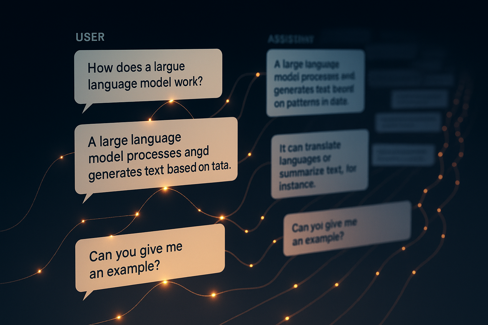
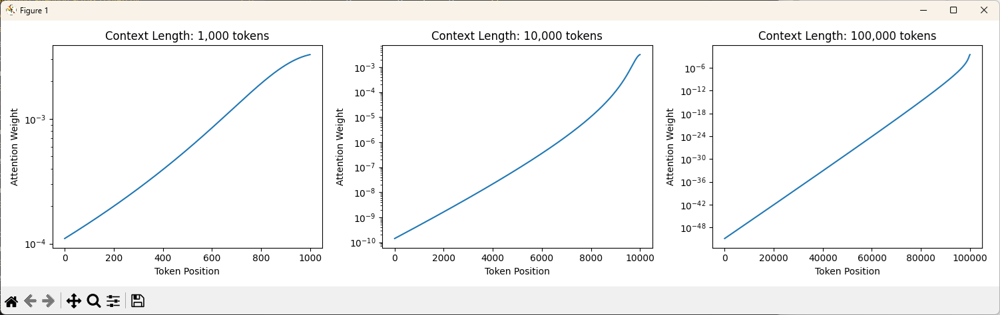
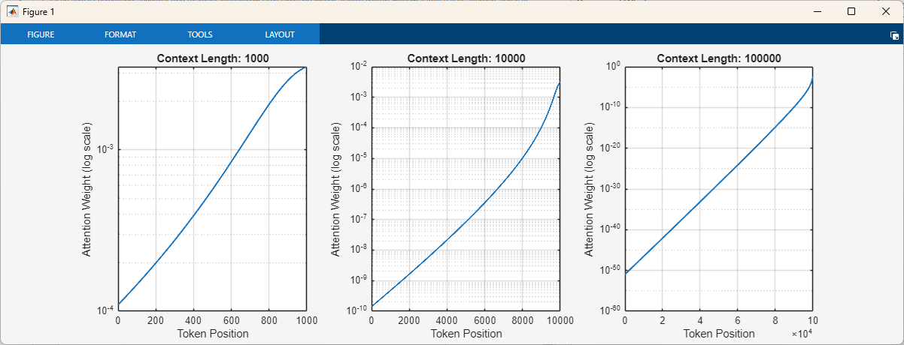
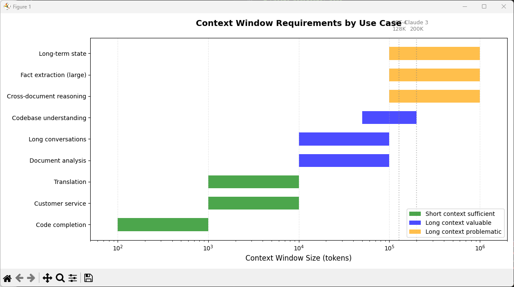

How Large Language Models (LLMs) Handle Context Windows: The Memory That Isn't Memory

When you have a long conversation with a large language model (LLM) such as ChatGPT or Claude , it feels like the model remembers everything you’ve discussed. It references earlier points, maintains consistent context, and seems to “know” what you talked about pages ago.
But here’s the uncomfortable truth: the model doesn’t remember anything. It’s not storing your conversation in memory the way a database would. Instead, it’s rereading the entire conversation from the beginning every single time you send a message.
“A context window isn’t memory. It’s a performance where the model rereads its lines before every response.”
This post explores what context windows actually are, how they work mathematically, why they have limits, and what happens when those limits are reached. For a foundation in how models represent meaning, start with How LLMs Think: Turning Meaning into Math .
The API vs. Web Interface: Where “Memory” Really Lives
Before diving into context windows, it’s crucial to understand a fundamental architectural distinction that most users never see.
The Raw API Has No Memory
When you call an LLM API directly, each request is completely independent:
|
|
The API is stateless. The model truly has no memory between calls. Each request starts from zero.
Web Interfaces Create the Illusion
The ChatGPT or Claude web interface maintains conversation continuity by:
- Storing the conversation history in the application layer (not in the model)
- Sending the entire history with each new message
- Managing what fits within the context window
Here’s what actually happens behind the scenes:
|
|
The key insight: The model itself stores nothing. The application manages conversation history and decides what to include in each API request. The context window is simply the maximum amount of conversation history that can be sent at once.
Think of it like talking to someone with amnesia, but you’re reading them their diary first. They don’t remember yesterday. They’re just responding to what you showed them right now.
What Is a Context Window?
A context window is how many tokens the model can process at once. Think of it as the model’s field of vision where everything within that window can influence the next token it predicts.
Modern models have impressive context windows:
- GPT-4: 128,000 tokens (~96,000 words)
- Claude 3: 200,000 tokens (~150,000 words)
- Gemini 1.5: 1,000,000 tokens (~750,000 words)
These numbers sound enormous. An entire novel fits easily. But bigger isn’t always better, and the way models “use” this space reveals fundamental constraints.
The Illusion of Memory
Now that you understand the architecture, here’s what actually happens during a web interface conversation:
Turn 1: You send a message. The application sends it to the API. The model processes it and responds.
Turn 2: You send another message. The application takes your first message + the model’s first response + your second message and sends all of it to the API. The model processes everything to generate its second response.
Turn 3: The application sends everything from turns 1 and 2 plus your new message to the API. The model processes it all.
By turn 10, the model is processing thousands of tokens every single time, rereading the entire conversation thread from scratch. It’s not looking up stored facts. It’s recomputing attention over everything you’ve ever said in that session.
This is why “memory” in LLMs is an illusion. The model performs pattern matching across the visible conversation, not retrieval from storage. The web interface maintains the conversation history, but the model itself remembers nothing.
How Attention Creates the Illusion
The mechanism that makes this work is the attention mechanism, specifically self-attention, as defined in the foundational paper “Attention Is All You Need” ( Vaswani et al., 2017 ). When processing token \(i\) in the sequence, the model computes how much attention to pay to every previous token \(j\).
The attention score between two tokens is computed as:
\[ \text{Attention}(Q, K, V) = \text{softmax}\left(\frac{QK^T}{\sqrt{d_k}}\right)V \]
Where:
- \(Q\) = query (what the current token is looking for)
- \(K\) = keys (what each previous token can offer)
- \(V\) = values (the actual content of those tokens)
- \(d_k\) = dimensionality of the key vectors (scaling factor)
For every new token the model generates, it computes attention across every token in the context window. If your conversation is 10,000 tokens long, that’s 10,000 attention calculations per new token. For a visual explanation of how attention mechanisms work in practice, see Alammar (2018) .
The Quadratic Cost Problem
Here’s where the math gets brutal. As shown in the original Transformer paper ( Vaswani et al., 2017 ), attention scales quadratically with sequence length.
If you double the conversation length:
- The model has to compute \(2n\) queries
- Against \(2n\) keys
- Resulting in \((2n)^2 = 4n^2\) operations
Doubling the context requires 4× the computation.
This is why context windows have hard limits. It’s not just storage. It’s computational cost. Processing a 128k token conversation requires computing roughly 16 billion attention scores for a single response token.
What Gets Lost: The Attention Dilution Problem
Even within the context window, not all tokens are treated equally. The softmax function in the attention mechanism creates a probability distribution over all previous tokens.
As the context grows:
- Attention gets spread thinner across more tokens
- Older tokens receive exponentially less attention
- The model effectively “forgets” details from early in the conversation
Think of it like a spotlight with fixed brightness. In a small room, everything is illuminated clearly. In a stadium, that same spotlight becomes a dim glow barely reaching the far corners.
This is why models often lose track of instructions or details mentioned 50,000 tokens ago, even though those tokens are technically still in the context window being sent by the application.
Why This Isn’t Like Human Memory
It’s tempting to compare LLM context to human memory. After all, both seem to “remember” past conversations. But the mechanisms are fundamentally different.
Human memory consolidates and abstracts. You might forget the details of an argument with a friend from years ago, but you remember the emotional aftermath: “I don’t like Bob.” That’s a learned fact stored independently of the original experience. You’ve compressed the memory, extracted its essence, and stored that abstraction.
LLMs don’t consolidate anything. When information falls outside the context window, there’s no residual memory, no learned preference, no compressed representation. The model has complete amnesia. It’s not that it forgot the details but remembers the gist. It has zero knowledge that the conversation ever happened.
Think of it this way: Your brain transforms experiences into lasting neural patterns that persist independently. An LLM’s “memory” is the text itself, being reread. Remove the text, and the memory vanishes completely.
This is why context windows are better compared to working memory (like keeping a phone number in your head) rather than long-term memory (like knowing your childhood address). The moment you stop actively thinking about that phone number, it’s gone unless you encoded it into long-term storage. LLMs have working memory (the context window) but no mechanism to encode conversations into long-term storage.
The weights trained into the model represent general patterns from training data, not memories of your specific conversations. Those weights are frozen. Your chat doesn’t update them. This is why every new conversation starts from zero, and why the model never truly “learns” from talking to you.
Positional Encodings: Teaching Order Without Counting
One of the stranger aspects of context windows is that transformers have no inherent sense of token order. The attention mechanism is permutation-invariant. It doesn’t naturally know that “The cat chased the mouse” is different from “The mouse chased the cat.”
To solve this, models use positional encodings that inject order information into each token’s representation. The original Transformer architecture ( Vaswani et al., 2017 ) used absolute positional encodings with sinusoidal functions:
\[ PE_{(pos, 2i)} = \sin\left(\frac{pos}{10000^{2i/d_{model}}}\right) \] \[ PE_{(pos, 2i+1)} = \cos\left(\frac{pos}{10000^{2i/d_{model}}}\right) \]
Where \(pos\) is the token’s position, \(i\) is the dimension index, and \(d_{model}\) is the model’s dimensionality. These sinusoidal functions create unique patterns for each position that the model learns to interpret.
Relative positional encodings ( Shaw et al., 2018 ; Dai et al., 2019 ) instead encode the distance between tokens rather than absolute positions. This helps with longer contexts because the model learns “token A is 5 positions before token B” rather than “token A is at position 1,247.”
But both approaches degrade at extreme distances. A token 100,000 positions away has such a different positional encoding that attention scores become unreliable.
What Happens When Context Fills Up
When your conversation exceeds the context window, the web interface (not the model) must employ strategies to manage what gets sent:
1. Truncation (Sliding Window)
The application drops the oldest tokens from what it sends to the API. The model processes only the most recent \(N\) tokens.
Problem: You lose the beginning of the conversation entirely. Instructions given in message 1 vanish if the conversation grows long enough. The application literally can’t send them anymore because they don’t fit in the context window.
2. Summarization
Some systems automatically summarize older portions of the conversation and replace them with condensed versions in what gets sent to the API.
Problem: Summarization is lossy. Nuance, specific examples, and precise wording disappear. The model is now reasoning over a summary of your conversation rather than your actual words.
3. Retrieval-Augmented Generation (RAG)
The application stores the full conversation in an external database and retrieves relevant chunks to include in the API call.
Problem: Retrieval is imperfect. The system has to guess which past messages are relevant. It might retrieve the wrong context or miss critical information.
The KV Cache Optimization
Modern implementations use a clever optimization called key-value caching. Instead of recomputing the keys and values for every token in the context on every forward pass, the model caches them.
Here’s the efficiency gain:
Without KV cache:
- Process 10,000 tokens: compute 10,000 queries, 10,000 keys, 10,000 values
- Generate token 1: compute attention over all 10,000
- Generate token 2: recompute everything again plus the new token
With KV cache:
- Process 10,000 tokens once: cache the 10,000 keys and values
- Generate token 1: compute 1 new query, reuse cached keys/values
- Generate token 2: compute 1 new query, reuse all cached keys/values plus token 1’s cache
This dramatically reduces computational cost, but it increases memory cost. Storing 100,000 cached key-value pairs for a 70-billion-parameter model requires gigabytes of GPU memory.
There’s always a trade-off: speed vs. memory vs. context length.
Why Longer Context Doesn’t Mean Better Performance
You’d think a 1 million token context window would be strictly better than a 100k token window. But research shows diminishing returns and sometimes worse performance with extreme context lengths:
Attention dilution: With more tokens competing for attention, each individual token receives less focus.
Positional encoding degradation: Encoding schemes that work well at 10k tokens break down at 500k tokens.
“Lost in the middle” phenomenon: Studies show models perform worst on information buried in the middle of very long contexts ( Liu et al., 2023 ). They attend well to the beginning (recency bias inverted by training) and the end (recency bias), but lose track of the middle.
Increased hallucination: With more context to “manage,” models sometimes confabulate connections between distant, unrelated parts of the conversation.
Visualizing Attention Across Context
Attention weight distribution is easier to understand visually. For a comprehensive visual explanation of how attention mechanisms work, see Alammar (2018) .
Below is a simplified simulation showing how attention weights decay across growing context lengths:
Python Version
Here’s a conceptual Python example showing how attention weights distribute across a growing context:
|
|
What the plot reveals: As context grows, attention spreads across exponentially more tokens, creating a flatter, noisier distribution. The signal-to-noise ratio degrades.

MATLAB Version
To reproduce the same curve in MATLAB, use the following script:
|
|
This produces the same curve, showing that as the number of tokens grows, older tokens fade into near-zero significance.

Retrieval-Augmented Generation (RAG)
RAG bridges the gap between finite context and long-term knowledge. Instead of depending on the model’s internal attention, RAG systems perform semantic retrieval to inject only the most relevant information into each API call.
- Chunking text or conversation history into semantically meaningful segments.
- Embedding each chunk into a vector space.
- Retrieving top-k relevant segments using cosine similarity.
- Composing a dynamic prompt with the query and retrieved context.
- Generating an answer grounded in that retrieved material.
This scales almost logarithmically with data size, though retrieval accuracy becomes the bottleneck. If the retrieval misses a key piece of context, the response quality collapses.
Recent work on context compression models and adaptive retrieval improves this by predicting relevance before querying ( Jiang et al., 2023 ). GPT-4’s emerging memory features and Claude’s “Artifacts” hint at this direction with persistent, embedded summaries that act as latent conversation memory.
Context Windows in Practice

Different use cases have different context needs:
Short context sufficient:
- Code completion (hundreds of tokens)
- Customer service chatbots (thousands of tokens)
- Translation (thousands of tokens)
Long context valuable:
- Document analysis (tens of thousands of tokens)
- Long conversation threads (tens of thousands of tokens)
- Codebase understanding (hundreds of thousands of tokens)
Long context problematic:
- Complex reasoning across many documents (attention dilution)
- Extracting specific facts from massive context (retrieval more effective)
- Maintaining consistent state over very long interactions (external memory better)
The key insight: long context is a tool, not a solution. For many tasks, structured retrieval or explicit memory systems outperform simply cramming everything into the context window.
The Future: Beyond Attention
Researchers are pushing beyond quadratic attention toward architectures that combine efficiency, persistence, and abstraction.
1. Linearized and Hybrid Attention Models like Mamba ( Gu & Dao, 2023 ) and RWKV ( Peng et al., 2023 ) merge recurrent updates with attention-style gating, keeping a compact “state trace” instead of recomputing pairwise attention. They process input almost linearly with sequence length, hinting at a path to true scalability.
2. Modular Memory Architectures Upcoming designs experiment with distinct submodules for short-term reasoning, factual recall, and abstract summaries. Instead of one monolithic attention map, different “memory heads” specialize, which is closer to how human cognition distributes recall.
3. Hierarchical Context Multi-scale models use local attention for fine detail and upper layers for long-span summaries, compressing sequences without losing coherence. The model reasons hierarchically, the way we summarize and then recall the gist.
4. Neuro-symbolic Integration Long-term context may eventually blend neural pattern recognition with symbolic memory. Rather than rereading raw text, future systems could retrieve structured knowledge graphs, giving them durable, compositional recall.
The direction is clear: the next breakthroughs won’t simply extend context. They’ll reshape what it means to have context at all.
Prompt Engineering and Context Windows
Knowing how attention fades helps you design prompts that survive long contexts. Prompt engineering is really attention sculpting: placing information where the model is most likely to “see” it.
Reinforce key details near the end. Recency bias makes the last tokens disproportionately influential. Group related instructions so directives are not scattered. Prefer concise summaries over raw dumps of conversation. Repeat critical goals near the output boundary to keep them in focus.
For example, if you’re asking the model to analyze a long document and extract specific facts, place your extraction criteria at the end of the prompt, after the document text. This ensures the model “sees” your requirements with maximum attention when generating its response.
In practice, the tail of your prompt is prime real estate. The closer critical details are to the end, the more reliably they guide the response.
GPT-4 vs. Claude: Long Context Behavior
Both GPT-4 (128k tokens) and Claude 3 (200k) handle extended sequences gracefully, but they show distinct personalities when context stretches toward the limit.
Claude 3 tends to preserve semantic coherence. It paraphrases well and often retains conceptual meaning even when exact phrases drift out of focus. However, its precision drops past 150k tokens where quotes blur, and substitutions appear. Claude maintains tone consistency remarkably well, suggesting active summarization before truncation.
GPT-4 leans toward syntactic fidelity. It reproduces exact code and phrasing more accurately and resists paraphrasing. Yet it’s more brittle with unstructured input; when order or hierarchy is lost, GPT-4’s logical scaffolding weakens faster. On complex reasoning tasks, though, it often outperforms Claude because its tighter attention preserves logical dependencies.
In short, Claude remembers the idea, GPT-4 remembers the wording. This difference is a reflection of how each platform balances summarization and exact recall.
Closing Thoughts
Longer context windows don’t create memory; they create the appearance of memory. They expand the stage on which attention performs but don’t change the nature of the act. The real progress will come from systems that know what to retain, what to retrieve, and what to ignore.
After years of building AI tools for documentation at Microsoft, I’ve learned that this pattern isn’t a flaw; it’s a design choice. The model isn’t forgetful; it’s efficient. It reads everything you show it, decides what matters mathematically, and writes a response based on the clarity of what’s in view right now.
Understanding that transforms how you work with LLMs. You restate. You summarize. You keep the spotlight pointed where you need it. Because when you realize that an LLM’s memory is simply its present context, you stop wishing for something it doesn’t have, and start mastering what it actually does.
If you’ve followed this series from how LLMs read code through how they think and how they learn , you now understand the full picture: pattern recognition through probability, geometric meaning through linear algebra, improvement through calculus, and the illusion of memory through attention. What emerges is a system that’s powerful precisely because of, not despite, its constraints.
Try It Yourself
Download the full code on GitHub
Further Reading
If you want to dive deeper into the mathematics and architecture of context windows:
- Alammar, J. (2018).
The Illustrated Transformer
.
Excellent visual explanation of attention mechanisms and how transformers process sequences. Highly accessible introduction to the concepts.
- Dai, Z., Yang, Z., Yang, Y., et al. (2019).
Transformer-XL: Attentive Language Models Beyond a Fixed-Length Context
. Proceedings of ACL 2019.
Proposes techniques for extending context beyond fixed windows, including relative positional encodings and segment-level recurrence.
- Gu, A., & Dao, T. (2023).
Mamba: Linear-Time Sequence Modeling with Selective State Spaces
. arXiv preprint.
Introduces state space models that achieve linear-time processing while maintaining competitive performance with transformers.
- Jiang, Z., et al. (2023).
LLMLingua: Compressing Prompts for Accelerated Inference of Large Language Models
. arXiv preprint.
Introduces prompt compression techniques that maintain semantic meaning while reducing token count.
- Liu, N. F., Lin, K., Hewitt, J., et al. (2023).
Lost in the Middle: How Language Models Use Long Contexts
. arXiv preprint.
Empirical study showing that LLMs perform worst on information in the middle of very long contexts, with best performance at the beginning and end.
- Peng, B., Alcaide, E., Anthony, Q., et al. (2023).
RWKV: Reinventing RNNs for the Transformer Era
. arXiv preprint.
Proposes a linear-complexity alternative to transformers that combines RNN efficiency with transformer-like performance.
- Shaw, P., Uszkoreit, J., & Vaswani, A. (2018).
Self-Attention with Relative Position Representations
. Proceedings of NAACL-HLT 2018.
Introduces relative positional encodings that help models handle longer contexts more effectively.
- Tay, Y., Dehghani, M., Bahri, D., & Metzler, D. (2022).
Efficient Transformers: A Survey
. ACM Computing Surveys, 55(6), 1-28.
Comprehensive survey of attention alternatives and efficiency techniques for transformers, covering sparse attention, linear attention, and other scaling approaches.
- Vaswani, A., Shazeer, N., Parmar, N., et al. (2017).
Attention Is All You Need
. Advances in Neural Information Processing Systems, 30.
The foundational paper that introduced the Transformer architecture and the attention mechanism. Essential reading for understanding how context windows work mathematically.